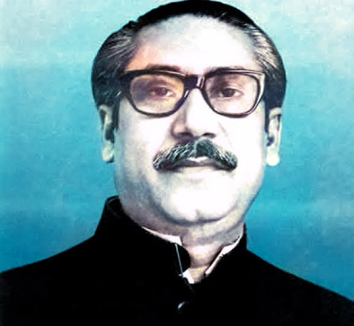

You can Send us E-mail in-- lets.code.the.future@gmail.com
Multiple language! visit our website on your favourite language
to change language Tap on the language option from the nev bar.
E-mail ! You can Send us E-mail in-- lets.code.the.future@gmail.com .

Timeline of few major events in Sheikh Mujibur Rahman's life
. 1934
- Eye injury nearly makes him blind.
. 1939
- Meets Sher-e-Bangla A. K. Fazlul Huq and
Huseyn Shaheed Suhrawardy for the first time
. 1932
- (Officially) marries cousin Begum Fazilatunnesa
. 4 January 1948
- Co-finds East Pakistan Muslim
Chhatro (Students) League
. 17 March 1948
- Support for Dhaka
University's employee rights
. 26 March 1949
- Expelled from Dhaka University
. 23 June 1949
- Appointed Joint Secretary
of newly formed East Pakistan Awami
Muslim League
. 14 February 1952
- Hunger strikes from jail during
Bhasha Andolon
. June 1954
- Jailed for 7 months after Jukta Front
win election
. 21 October 1955 - 1966
- Re-elected General Secretary of Awami League
. 11 October 1958
- Held as political
prisoner for 14 months
. 1 March 1966
- Elected President of Awami League
. 1966
- Arrested numerous times for advocating 6-Dafa (Six Point movement)
. 1968 - 22 February 1969
- Arrested and tried in 'Agartala Shorjontro Mamla' (Agartala Conspiracy Case)
. 23 February 1969
- Tofail Ahmed gives honorary title of "Bangabandhu" (Friend of Bengal)
. 7 December 1970
- Leads Awami League to landslide victory in General Election
. 7 March 1971
- Addresses over a million Bengali crowd with historic "Ebarer Sangram" speech in Ramna Racecourse, Dhaka
. 26 March 1971
- Arrested at the start of Muktijuddho and jailed in West Pakistan for nine-and-half months
. 8 January 1972
- Released from prison in Pakistan. Returns to independent Bangladesh two days later
. 12 January 1972
- Steps down as President and becomes Prime Minister
. 1973
- Leads Awami League to victory in Bangladesh's first ever General Election
. 24 September 1974
- Addresses General Assembly of the United Nations in Bangla
. 25 January 1975
- Becomes self-appointed President and replaces all political parties with BAKSAL
. 15 August 1975
- Assassinated in his home in Dhanmondi, Dhaka, along with most of his family
Thanks for visit the website!